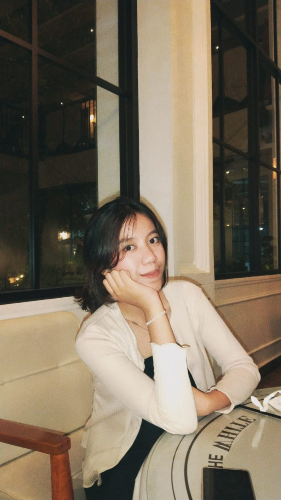

Email: lumbanrajaflorecita@gmail.com
Universitas Negeri Medan
Program Studi Bisnis Digital
Hobi saya adalah membaca dan menonton film. Saya memiliki minat di bidang bisnis digital, khususnya dalam strategi branding dan pengembangan usaha di era digital.
Saya memilih jurusan bisnis digital sebagai mahasiswa karena bidang ini sangat relevan dengan perkembangan teknologi dan kebutuhan dunia usaha saat ini. Perubahan menuju sistem digital membuat banyak perusahaan membutuhkan tenaga yang mampu memahami pemasaran online, e-commerce, dan strategi bisnis berbasis teknologi.
Saya lahir di Medan, 10 Juni 2006.
Saya tinggal di Medan, Sumatera Utara. Cita-cita saya adalah menjadi seorang data analyst di perusahaan besar serta mampu menciptakan lapangan pekerjaan bagi banyak orang.